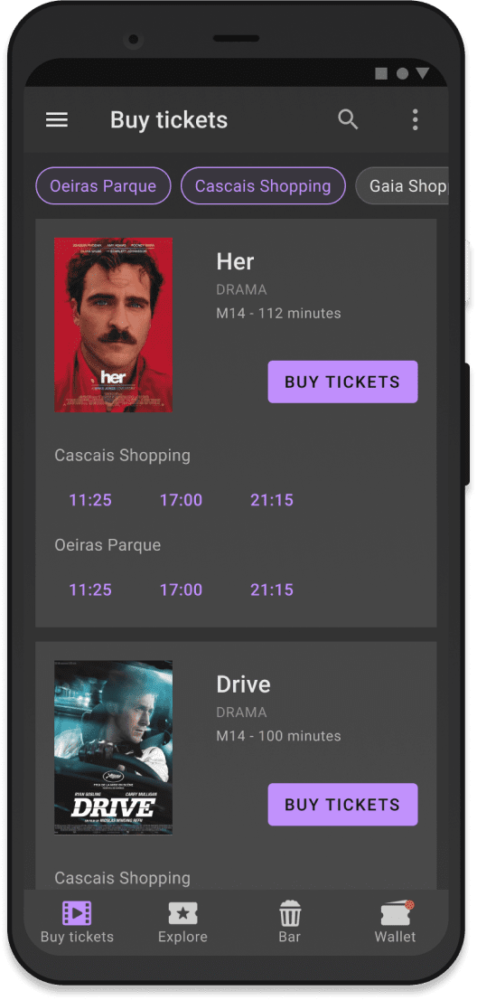
Project: Cinematic
Role: UX design, UX research
Project: September 2021 - November 2021
Cinematic is a seat reservation app for a cinema. The main goal of the app is to improve the cinema experience by letting users manage bookings through their phones and minimise time spent queuing. This project was developed through an iterative process based on insights from user research. Each iteration aimed to improve the product by addressing real user needs and pain points.
1) Simplify the process for buying cinema tickets
2) Create an intuitive user flow for uses of different backgrounds and age groups
3) Guide users through the flow with adequate feedback
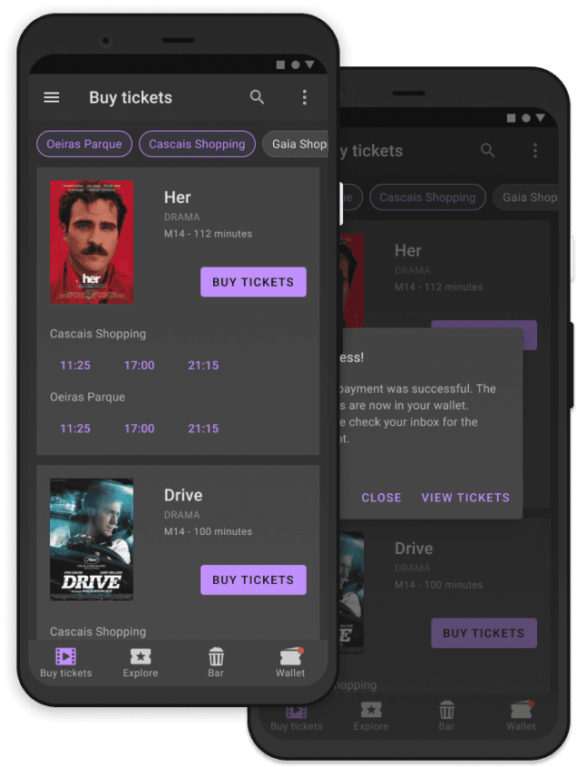
The iterative approach proved to be an effective way of developing the product and improve it at each step. To kickoff the project I gathered data that would later inform the design decisions. I used qualitative research methods as they seemed the most useful to guide the initial product direction. This included user interviews, a competitive audit, the creation of personas and user journey maps. To prepare for the research I started by asking some initial key questions.
"What is the product and who is it for?"
"What do the primary users need most?"
"What user groups can be identified?"
"What user groups can be identified?"
"Who are our biggest competitors?"
"What would motivate users to use the product?"
Name: Linda
Age: 50
Education: Phd Mathematics
Occupation: Professor
Problem statement
Linda is a busy professional who needs a way to check the availability of cinemas and buy tickets because she hates spending time queuing.
Name: Tom
Age: 16
Education: Highschool
Occupation: Student
Problem statement
Tom is a high school student who needs a better way to coordinate group tickets with friends because it’s hard to find seats for popular films.
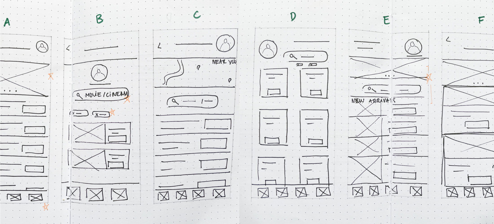
After sketching out paper wireframes and highlighting promising features to explore I started developing low-fidelity wireframes. At this stage, I explored the underlying UX in depth and iterated quickly on possible design solutions. The main problems I wanted to solve were how to make the main user flow, buying cinema tickets, as simple as possible and how to effectively display the most relevant information for users.
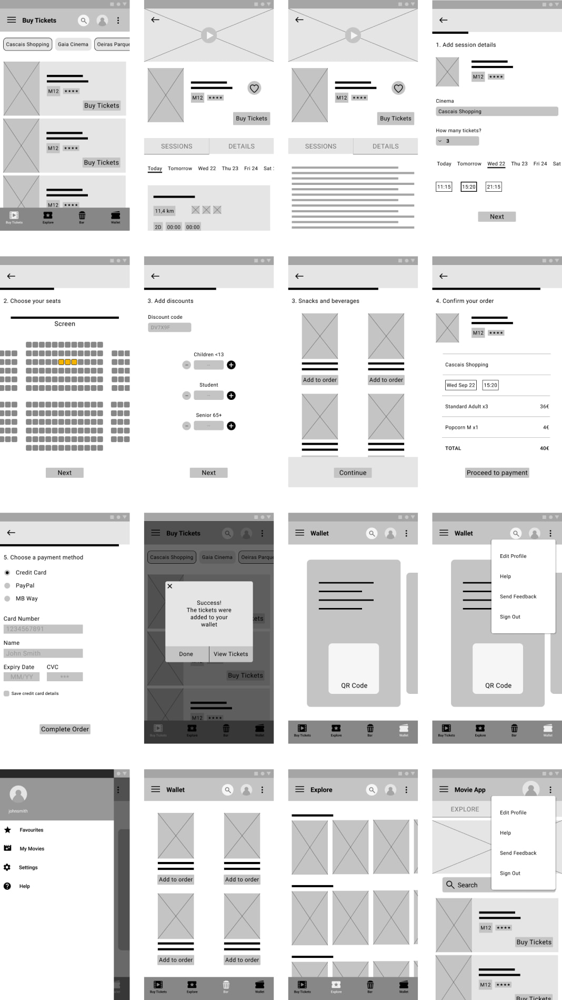
After creating an interactive prototype from low fidelity wireframes, I conducted the first round of usability studies. This was a very important step as it generated valuable insights that helped me further iterate and improve the designs. The next step was to create mockups and a high fidelity prototype to conduct the second round of usability studies. These were the main findings:
Most users were confused by this feature. The idea was to offer an option to reserve the tickets together but pay separately. In practice, users thought the feature added unnecessary complexity and preferred to buy all the tickets together.
Most users were confused by this feature. The idea was to offer an option to reserve the tickets together but pay separately. In practice, users thought the feature added unnecessary complexity and preferred to buy all the tickets together.
There were still some points in the flow that lacked adequate feedback. Users wanted to be able to see how the final price was affected when they made use of discounts. The designs at this stage only showed the final price as the user was about to pay.
Users were pleased to find multiple payment options that suited different user groups. Some users expressed they wanted the possibility to save payment details. This would simplify the checkout flow and make the experience more seamless.
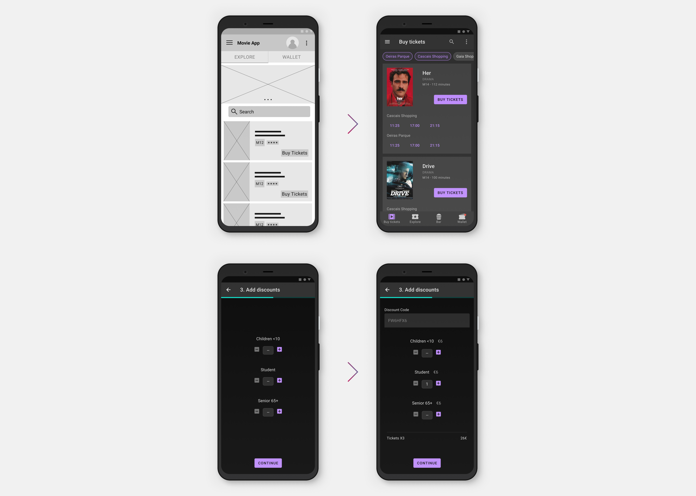
Challenge 1
Working out how to arrange and prioritise the necessary information for users was one of the main design challenges for the app. The main user flow, of buying the tickets, had to be as simple and fast as possible in order to clearly add value to the users by saving them time. The insights gained during the usability studies helped bring each iteration of the designs closer to what users really needed. The final designs allowed users to filter by location, minimised the amount of steps for the main user flow and provided information on public transport and wheelchair access through the use of icons.
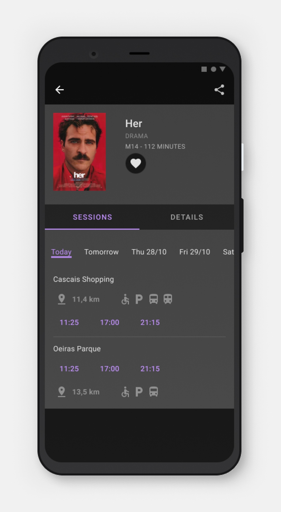
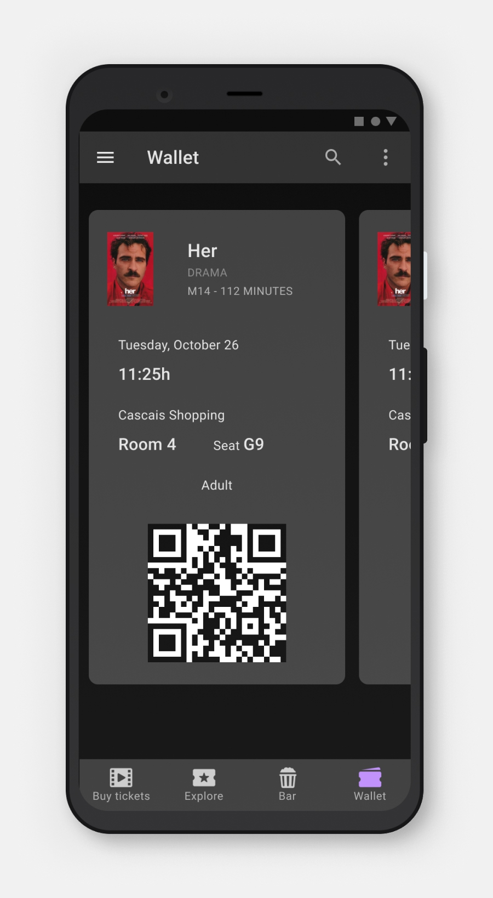
Challenge 2
In order to make the main user flow as intuitive as possible, I used common navigational patterns and UI elements. The bottom navigation is a popular navigation option that provides easy access to the main regions within the app. The main user flow, of buying the tickets, was signalled with a call to action button of a contrasting colour. I tried to cater to the needs of users from different backgrounds and age groups through the use of icons, images and descriptive text.
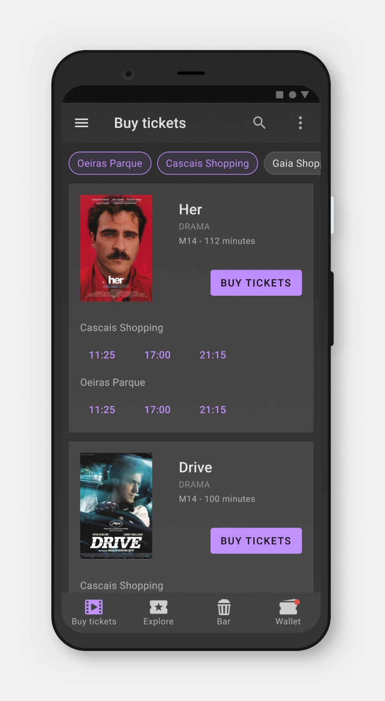
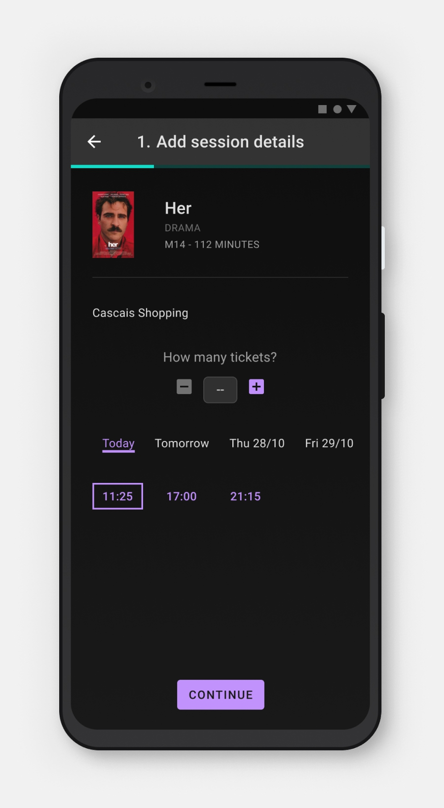
Challenge 3
Guiding users through the flow was a priority when designing the Cinematic app. Research revealed that users experienced frustrations during checkout flows when no adequate feedback was provided. The designs included an order confirmation screen, improved feedback for the discounts screen and input field feedback on the payment details screen.
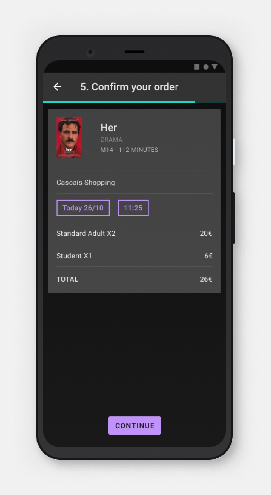
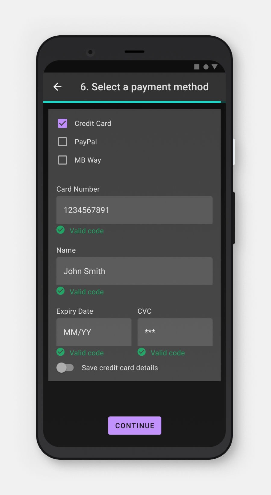
This project leaned heavily on the design process as I explored how to incorporate the various techniques to develop and improve a digital product. What jumped out to me the most was how crucial the feedback from users was. I discovered that after iterating the designs to the best of my ability, having people use and test the prototype was what opened new directions to be explored. This step fostered more creativity and stoped me from getting stuck on a solution too soon. It helped me drop features early on, like the group ticket, because I realised users didn't find them useful. And finally, it helped me better empathise with the people that might use the Cinematic app and create solutions that addressed their problems and needs.